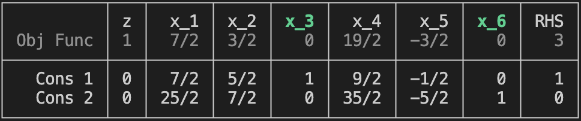

Tutorial
This is a step-by-step guide for solving linear programs using the SimplexTableau module.
Setting Up
This module enables the user to solve linear program problems in one of the following two forms:
- Standard: $\min c^T x$ subject to $A x = b, x ≥ 0$. Use:
Tableau(A,b,c,false). - Canonical: $\min c^T x$ subject to $A x ≥ b, x ≥ 0$. Use:
Tableau(A,b,c).
Here, $A$ is an $m \times n$-matrix, $b$ is an $m$-vector, and $c$ is an $n$-vector.
Only minimization problems are supported.
Every number entered into a
Tableaumust be anIntegeror aRational. Internally, all numbers are converted toRational{BigInt}type. This module does not support linear programs with floating point data.
Example: Standard form linear program
Let $A=\left[ \begin{array}{rrrrrr} 1 & 8 & -2 & 8 & 6 & -1 \\ 2 & 6 & 2 & 9 & 2 & 1 \\ 6 & 3 & 5 & 9 & 7 & 1 \\ \end{array} \right]$, $b= \left[ \begin{array}{r} -2 \\ 4 \\ 9 \\ \end{array} \right]$, and $c = \left[ \begin{array}{r} 0 \\ 3 \\ 3 \\ -1 \\ 2 \\ -4 \\ \end{array} \right]$.
Here is how to set up the standard LP $\min c^T x$ s.t. $Ax=b,x\ge0$:
julia> A = [1 8 -2 8 6 -1; 2 6 2 9 2 1; 6 3 5 9 7 1];
julia> b = [-2, 4, 9];
julia> c = [0, 3, 3, -1, 2, -4];
julia> T = Tableau(A, b, c, false)
┌──────────┬───┬─────┬─────┬─────┬─────┬─────┬─────┬─────┐
│ │ z │ x_1 │ x_2 │ x_3 │ x_4 │ x_5 │ x_6 │ RHS │
│ Obj Func │ 1 │ 0 │ -3 │ -3 │ 1 │ -2 │ 4 │ 0 │
├──────────┼───┼─────┼─────┼─────┼─────┼─────┼─────┼─────┤
│ Cons 1 │ 0 │ 1 │ 8 │ -2 │ 8 │ 6 │ -1 │ -2 │
│ Cons 2 │ 0 │ 2 │ 6 │ 2 │ 9 │ 2 │ 1 │ 4 │
│ Cons 3 │ 0 │ 6 │ 3 │ 5 │ 9 │ 7 │ 1 │ 9 │
└──────────┴───┴─────┴─────┴─────┴─────┴─────┴─────┴─────┘Note the false in the function call; it indicates that this is not canoncial (that is, it is standard) so no slack variables are added.
Written as a (partitioned) matrix, this tableau looks like this:
\[\left[ \begin{array}{r|rrrrrr|r} 1 & 0 & -3 & -3 & 1 & -2 & 4 & 0 \\ \hline 0 & 1 & 8 & -2 & 8 & 6 & -1 & -2 \\ 0 & 2 & 6 & 2 & 9 & 2 & 1 & 4 \\ 0 & 6 & 3 & 5 & 9 & 7 & 1 & 9 \\ \end{array} \right]\]
The top (header) row represents the objective function we wish to minimize: $z = 0x_1 + 3x_2 + 3x_3 - x_4 + 2x_5 - 4x_6$. It is rearranged to appear in the form $z - 0x_1 - 3x_2 - 3x_3 + x_4 - 2x_5 + 4x_6 = 0$.
The next three rows are the constraints from $A x = b$. For example, the first constraint is $x_1 + 8x_2 - 2x_3 + 8x_4 + 6x_5 - x_6 = -2$.
Example: Canonical form linear program
Let $A=\left[ \begin{array}{rrrr} 7 & 5 & 2 & 9 \\ 5 & 9 & 5 & 5 \\ \end{array} \right]$, $b=\left[ \begin{array}{r} 2 \\ 5 \\ \end{array} \right] $, and $c=\left[ \begin{array}{r} 7 \\ 6 \\ 3 \\ 4 \\ \end{array} \right]$.
Here is how to set up the canonical LP $\min c^T x$ s.t. $Ax\ge b, x\ge0$:
julia> A = [7 5 2 9; 5 9 5 5];
julia> b = [2, 5];
julia> c = [7, 6, 3, 4];
julia> T = Tableau(A, b, c)
┌──────────┬───┬─────┬─────┬─────┬─────┬─────┬─────┬─────┐
│ │ z │ x_1 │ x_2 │ x_3 │ x_4 │ x_5 │ x_6 │ RHS │
│ Obj Func │ 1 │ -7 │ -6 │ -3 │ -4 │ 0 │ 0 │ 0 │
├──────────┼───┼─────┼─────┼─────┼─────┼─────┼─────┼─────┤
│ Cons 1 │ 0 │ 7 │ 5 │ 2 │ 9 │ -1 │ 0 │ 2 │
│ Cons 2 │ 0 │ 5 │ 9 │ 5 │ 5 │ 0 │ -1 │ 5 │
└──────────┴───┴─────┴─────┴─────┴─────┴─────┴─────┴─────┘Note that $x_5$ and $x_6$ are added as slack variables. Therefore the first constraint is $7x_1 + 5x_2 +2 x_3 +9x_4 - x_5=2$ which is equivalent to $7x_1 + 5x_2 +2 x_3 +9x_4 \ge 2$. With these extra variables, the LP is now in standard form.
The objective function is $z = 7x_1 + 6x_2 + 3x_3 + 4x_4$ that is encoded in the tableau as $z-7x_1 -6x_2 -3x_3 -4x_4=0$.
Pivoting
Pivoting is a fundamental operation in linear algebra that is used extensively in the Simplex Method. A pivot on element $a_{ij}$ of a matrix begins by multiplying row $i$ by $1/a_{ij}$. This leaves a $1$ in position $i,j$. Then multiples of row $i$ are added to the other rows so that all the other entries in column $j$ are now $0$.
For example, suppose we wish to pivot on the $2$ in this matrix:
\[\left[ \begin{array}{r|rrrrrr|r} 1 & -7 & -6 & -3 & -4 & 0 & 0 & 0 \\ \hline 0 & 7 & 5 & \fbox2 & 9 & -1 & 0 & 2 \\ 0 & 5 & 9 & 5 & 5 & 0 & -1 & 5 \\ \end{array} \right]\]
The main body of the matrix lies below the header row and between the vertical dividers. This is considered to be the $1,3$-entry of the matrix: this corresponds to the constraint $1$ in the column of $x_3$.
First we multiply row $1$ through by $1/2$:
\[\left[ \begin{array}{r|rrrrrr|r} 1 & -7 & -6 & -3 & -4 & 0 & 0 & 0 \\ \hline 0 & 7/2 & 5/2 & 1 & 9/2 & -1/2 & 0 & 1 \\ 0 & 5 & 9 & 5 & 5 & 0 & -1 & 5 \end{array} \right]\]
Then we add $3$ times the first row to the header (row $0$) and $-5$ times the first row to the second row:
\[\left[ \begin{array}{r|rrrrrr|r} 1 & 7/2 & 3/2 & 0 & 19/2 & -3/2 & 0 & 3 \\ \hline 0 & 7/2 & 5/2 & 1 & 9/2 & -1/2 & 0 & 1 \\ 0 & -25/2 & -7/2 & 0 & -35/2 & 5/2 & -1 & 0 \\ \end{array} \right]\]
In the SimplexTableau module, this operation is accomplished with the pivot! function:
julia> T
┌──────────┬───┬─────┬─────┬─────┬─────┬─────┬─────┬─────┐
│ │ z │ x_1 │ x_2 │ x_3 │ x_4 │ x_5 │ x_6 │ RHS │
│ Obj Func │ 1 │ -7 │ -6 │ -3 │ -4 │ 0 │ 0 │ 0 │
├──────────┼───┼─────┼─────┼─────┼─────┼─────┼─────┼─────┤
│ Cons 1 │ 0 │ 7 │ 5 │ 2 │ 9 │ -1 │ 0 │ 2 │
│ Cons 2 │ 0 │ 5 │ 9 │ 5 │ 5 │ 0 │ -1 │ 5 │
└──────────┴───┴─────┴─────┴─────┴─────┴─────┴─────┴─────┘
julia> pivot!(T,1,3)
[ Info: Unable to infer basis
┌──────────┬───┬───────┬──────┬─────┬───────┬──────┬─────┬─────┐
│ │ z │ x_1 │ x_2 │ x_3 │ x_4 │ x_5 │ x_6 │ RHS │
│ Obj Func │ 1 │ 7/2 │ 3/2 │ 0 │ 19/2 │ -3/2 │ 0 │ 3 │
├──────────┼───┼───────┼──────┼─────┼───────┼──────┼─────┼─────┤
│ Cons 1 │ 0 │ 7/2 │ 5/2 │ 1 │ 9/2 │ -1/2 │ 0 │ 1 │
│ Cons 2 │ 0 │ -25/2 │ -7/2 │ 0 │ -35/2 │ 5/2 │ -1 │ 0 │
└──────────┴───┴───────┴──────┴─────┴───────┴──────┴─────┴─────┘Bases
The Simplex Method begins by finding a set of $m$ columns (where $m$ is the number of constraints) that are linearly independent. We pivot on elements of those columns to transform them into standard basis vectors. That is, in each of those columns there is a single $1$ all other elements of that column are $0$ (including in the header).
In the example we just considered, we see that pivoting on the $-1$ in the $(2,6)$ position will result in columns $3$ and $6$ forming a basis, and so those columns are called basic.
julia> T
┌──────────┬───┬───────┬──────┬─────┬───────┬──────┬─────┬─────┐
│ │ z │ x_1 │ x_2 │ x_3 │ x_4 │ x_5 │ x_6 │ RHS │
│ Obj Func │ 1 │ 7/2 │ 3/2 │ 0 │ 19/2 │ -3/2 │ 0 │ 3 │
├──────────┼───┼───────┼──────┼─────┼───────┼──────┼─────┼─────┤
│ Cons 1 │ 0 │ 7/2 │ 5/2 │ 1 │ 9/2 │ -1/2 │ 0 │ 1 │
│ Cons 2 │ 0 │ -25/2 │ -7/2 │ 0 │ -35/2 │ 5/2 │ -1 │ 0 │
└──────────┴───┴───────┴──────┴─────┴───────┴──────┴─────┴─────┘
julia> pivot!(T,2,6)
┌──────────┬───┬──────┬─────┬─────┬──────┬──────┬─────┬─────┐
│ │ z │ x_1 │ x_2 │ x_3 │ x_4 │ x_5 │ x_6 │ RHS │
│ Obj Func │ 1 │ 7/2 │ 3/2 │ 0 │ 19/2 │ -3/2 │ 0 │ 3 │
├──────────┼───┼──────┼─────┼─────┼──────┼──────┼─────┼─────┤
│ Cons 1 │ 0 │ 7/2 │ 5/2 │ 1 │ 9/2 │ -1/2 │ 0 │ 1 │
│ Cons 2 │ 0 │ 25/2 │ 7/2 │ 0 │ 35/2 │ -5/2 │ 1 │ 0 │
└──────────┴───┴──────┴─────┴─────┴──────┴──────┴─────┴─────┘
julia> get_basis(T)
2-element Vector{Int64}:
3
6The get_basis function returns the current basis. If the tableau does not have a basis, a vector of all zeros is returned.
On the computer display, the labels of the basic columns are green.

Setting a basis
The function set_basis! is used to select columns to be a basis. This is invoked as set_basis(T, B) where B is a list of $m$ indices specifying the columns to form a basis.
For example:
julia> set_basis!(T,[2,4])
┌──────────┬───┬────────┬─────┬──────┬─────┬───────┬────────┬──────┐
│ │ z │ x_1 │ x_2 │ x_3 │ x_4 │ x_5 │ x_6 │ RHS │
│ Obj Func │ 1 │ -45/14 │ 0 │ 1/4 │ 0 │ -3/28 │ -17/28 │ 13/4 │
├──────────┼───┼────────┼─────┼──────┼─────┼───────┼────────┼──────┤
│ Cons 1 │ 0 │ 5/28 │ 1 │ 5/8 │ 0 │ 5/56 │ -9/56 │ 5/8 │
│ Cons 2 │ 0 │ 19/28 │ 0 │ -1/8 │ 1 │ -9/56 │ 5/56 │ -1/8 │
└──────────┴───┴────────┴─────┴──────┴─────┴───────┴────────┴──────┘However, this basis is not suitable for the Simplex Algorithm because the RHS column contains negative numbers. In other words, $\{2,4\}$ is an infeasible basis. On the other hand $\{3,6\}$ yields a feasible tableau.
julia> set_basis!(T,[3,6])
┌──────────┬───┬──────┬─────┬─────┬──────┬──────┬─────┬─────┐
│ │ z │ x_1 │ x_2 │ x_3 │ x_4 │ x_5 │ x_6 │ RHS │
│ Obj Func │ 1 │ 7/2 │ 3/2 │ 0 │ 19/2 │ -3/2 │ 0 │ 3 │
├──────────┼───┼──────┼─────┼─────┼──────┼──────┼─────┼─────┤
│ Cons 1 │ 0 │ 7/2 │ 5/2 │ 1 │ 9/2 │ -1/2 │ 0 │ 1 │
│ Cons 2 │ 0 │ 25/2 │ 7/2 │ 0 │ 35/2 │ -5/2 │ 1 │ 0 │
└──────────┴───┴──────┴─────┴─────┴──────┴──────┴─────┴─────┘Automatic basis selection
While any $m$ linearly independent columns may be selected to form a basis, finding a set of columns that yield a feasible tableau can be difficult. In a later section of this tutorial we describe a method for finding a basis, but we also provide tools to make this easy.
The function find_a_basis automatically finds a feasible basis. Combined with set_basis! the resut is a tableau that has been pivoted to a feasible configuation.
julia> T
┌──────────┬───┬─────┬─────┬─────┬─────┬─────┬─────┬─────┐
│ │ z │ x_1 │ x_2 │ x_3 │ x_4 │ x_5 │ x_6 │ RHS │
│ Obj Func │ 1 │ -7 │ -6 │ -3 │ -4 │ 0 │ 0 │ 0 │
├──────────┼───┼─────┼─────┼─────┼─────┼─────┼─────┼─────┤
│ Cons 1 │ 0 │ 7 │ 5 │ 2 │ 9 │ -1 │ 0 │ 2 │
│ Cons 2 │ 0 │ 5 │ 9 │ 5 │ 5 │ 0 │ -1 │ 5 │
└──────────┴───┴─────┴─────┴─────┴─────┴─────┴─────┴─────┘
julia> find_a_basis(T)
2-element Vector{Int64}:
2
5
julia> set_basis!(T,[2,5])
┌──────────┬───┬───────┬─────┬─────┬───────┬─────┬──────┬──────┐
│ │ z │ x_1 │ x_2 │ x_3 │ x_4 │ x_5 │ x_6 │ RHS │
│ Obj Func │ 1 │ -11/3 │ 0 │ 1/3 │ -2/3 │ 0 │ -2/3 │ 10/3 │
├──────────┼───┼───────┼─────┼─────┼───────┼─────┼──────┼──────┤
│ Cons 1 │ 0 │ 5/9 │ 1 │ 5/9 │ 5/9 │ 0 │ -1/9 │ 5/9 │
│ Cons 2 │ 0 │ -38/9 │ 0 │ 7/9 │ -56/9 │ 1 │ -5/9 │ 7/9 │
└──────────┴───┴───────┴─────┴─────┴───────┴─────┴──────┴──────┘Alternatively, using set_basis!(T), without specifying a basis, invokes find_a_basis to choose the basis for you.
If the tableau does not have a feasible basis, find_a_basis returns a vector of all zeros.
julia> T
┌──────────┬───┬─────┬─────┬─────┬─────┬─────┬─────┐
│ │ z │ x_1 │ x_2 │ x_3 │ x_4 │ x_5 │ RHS │
│ Obj Func │ 1 │ -3 │ -1 │ -5 │ -2 │ -5 │ 0 │
├──────────┼───┼─────┼─────┼─────┼─────┼─────┼─────┤
│ Cons 1 │ 0 │ 3 │ 2 │ 2 │ 2 │ 3 │ 4 │
│ Cons 2 │ 0 │ 4 │ 4 │ 3 │ 5 │ 2 │ 2 │
│ Cons 3 │ 0 │ 1 │ 2 │ 4 │ 2 │ 1 │ 1 │
└──────────┴───┴─────┴─────┴─────┴─────┴─────┴─────┘
julia> find_a_basis(T)
[ Info: No basis found.
3-element Vector{Int64}:
0
0
0Listing all feasible bases
The function find_all_bases returns a list of all feasible bases for a tableau:
julia> T
┌──────────┬───┬─────┬─────┬─────┬─────┬─────┬─────┬─────┐
│ │ z │ x_1 │ x_2 │ x_3 │ x_4 │ x_5 │ x_6 │ RHS │
│ Obj Func │ 1 │ 0 │ -3 │ -3 │ 1 │ -2 │ 4 │ 0 │
├──────────┼───┼─────┼─────┼─────┼─────┼─────┼─────┼─────┤
│ Cons 1 │ 0 │ 1 │ 8 │ -2 │ 8 │ 6 │ -1 │ -2 │
│ Cons 2 │ 0 │ 2 │ 6 │ 2 │ 9 │ 2 │ 1 │ 4 │
│ Cons 3 │ 0 │ 6 │ 3 │ 5 │ 9 │ 7 │ 1 │ 9 │
└──────────┴───┴─────┴─────┴─────┴─────┴─────┴─────┴─────┘
julia> find_all_bases(T)
6-element Vector{Vector{Int64}}:
[1, 2, 3]
[1, 3, 4]
[1, 3, 6]
[2, 3, 5]
[3, 4, 5]
[3, 5, 6]The
find_all_basesfunction is highly inefficient and only suitable for small linear programs.
Simplex Method
The Simplex Method finds the minimum objective value for a linear program, as well as the vector at which that minimum is achieved.
Overview
The steps in the Simplex Method are:
- Select a feasible starting basis. (If there is no such basis, the LP is infeasible.)
- Find a column headed by a positive number. (If there are none, the LP has reached an optimal state.)
- Form the ratios between the righthand column and the positive members of the column selected in step 2.
- Pivot on whichever entry in the selected column gives the lowest ratio. (If there are no positive numbers in the selected column, the LP is unbounded.)
- Go to step 2.
Manual execution of the Simplex Algorithm
The first step is to find a first basis for a tableau T either:
- Use
B = find_a_basis(T); set_basis!(T,B)or more simply set_basis!(T).
julia> T
┌──────────┬───┬─────┬─────┬─────┬─────┬─────┬─────┬─────┐
│ │ z │ x_1 │ x_2 │ x_3 │ x_4 │ x_5 │ x_6 │ RHS │
│ Obj Func │ 1 │ 0 │ -3 │ -3 │ 1 │ -2 │ 4 │ 0 │
├──────────┼───┼─────┼─────┼─────┼─────┼─────┼─────┼─────┤
│ Cons 1 │ 0 │ 1 │ 8 │ -2 │ 8 │ 6 │ -1 │ -2 │
│ Cons 2 │ 0 │ 2 │ 6 │ 2 │ 9 │ 2 │ 1 │ 4 │
│ Cons 3 │ 0 │ 6 │ 3 │ 5 │ 9 │ 7 │ 1 │ 9 │
└──────────┴───┴─────┴─────┴─────┴─────┴─────┴─────┴─────┘
julia> set_basis!(T)
┌──────────┬───┬─────────┬──────────┬─────┬─────┬─────┬──────────┬────────┐
│ │ z │ x_1 │ x_2 │ x_3 │ x_4 │ x_5 │ x_6 │ RHS │
│ Obj Func │ 1 │ 795/284 │ -931/142 │ 0 │ 0 │ 0 │ 1265/284 │ 334/71 │
├──────────┼───┼─────────┼──────────┼─────┼─────┼─────┼──────────┼────────┤
│ Cons 1 │ 0 │ 187/284 │ -117/142 │ 1 │ 0 │ 0 │ 85/284 │ 110/71 │
│ Cons 2 │ 0 │ -1/71 │ 62/71 │ 0 │ 1 │ 0 │ 6/71 │ 6/71 │
│ Cons 3 │ 0 │ 115/284 │ -15/142 │ 0 │ 0 │ 1 │ -51/284 │ 5/71 │
└──────────┴───┴─────────┴──────────┴─────┴─────┴─────┴──────────┴────────┘Later, we show how to find a first basis manually. See Finding a first basis later in this tutorial.
Next we need to select a column in which to pivot. In this example, there are two columns headed by positive numbers: Column 1 is headed by 795/284 and column 6 is headed by 1265/284.
It is possible to use the function find_pivot(T) to select the element on which to pivot.
julia> find_pivot(T)
(2, 6)This tells us to pivot at the $(2,6)$-entry of the tableau (where we see the value $6/71$).
While the find_pivot function suggested we pivot in column 6, we see that column 1 is also headed by a positive number, so we have the option to select a pivot there. We can use the ratios functions to calculate the appropriate pivot for a user-selected column.
julia> T
┌──────────┬───┬─────────┬──────────┬─────┬─────┬─────┬──────────┬────────┐
│ │ z │ x_1 │ x_2 │ x_3 │ x_4 │ x_5 │ x_6 │ RHS │
│ Obj Func │ 1 │ 795/284 │ -931/142 │ 0 │ 0 │ 0 │ 1265/284 │ 334/71 │
├──────────┼───┼─────────┼──────────┼─────┼─────┼─────┼──────────┼────────┤
│ Cons 1 │ 0 │ 187/284 │ -117/142 │ 1 │ 0 │ 0 │ 85/284 │ 110/71 │
│ Cons 2 │ 0 │ -1/71 │ 62/71 │ 0 │ 1 │ 0 │ 6/71 │ 6/71 │
│ Cons 3 │ 0 │ 115/284 │ -15/142 │ 0 │ 0 │ 1 │ -51/284 │ 5/71 │
└──────────┴───┴─────────┴──────────┴─────┴─────┴─────┴──────────┴────────┘
julia> ratios(T,1)
Ratios for column 1 headed by 795/284
Best pivot is in row 3
┌────────────┬──────────┬────────┬───────┐
│ Constraint │ Column 1 │ RHS │ Ratio │
├────────────┼──────────┼────────┼───────┤
│ 1 │ 187/284 │ 110/71 │ 40/17 │
│ 2 │ -1/71 │ 6/71 │ --- │
│ 3 │ 115/284 │ 5/71 │ 4/23 │
└────────────┴──────────┴────────┴───────┘This analysis shows that if we decide to pivot in column 1, we should do so at the $(3,1)$-entry. Here is the result:
julia> pivot!(T,3,1)
┌──────────┬───┬─────┬─────────┬─────┬─────┬──────────┬─────────┬───────┐
│ │ z │ x_1 │ x_2 │ x_3 │ x_4 │ x_5 │ x_6 │ RHS │
│ Obj Func │ 1 │ 0 │ -134/23 │ 0 │ 0 │ -159/23 │ 131/23 │ 97/23 │
├──────────┼───┼─────┼─────────┼─────┼─────┼──────────┼─────────┼───────┤
│ Cons 1 │ 0 │ 0 │ -15/23 │ 1 │ 0 │ -187/115 │ 68/115 │ 33/23 │
│ Cons 2 │ 0 │ 0 │ 20/23 │ 0 │ 1 │ 4/115 │ 9/115 │ 2/23 │
│ Cons 3 │ 0 │ 1 │ -6/23 │ 0 │ 0 │ 284/115 │ -51/115 │ 4/23 │
└──────────┴───┴─────┴─────────┴─────┴─────┴──────────┴─────────┴───────┘Now the column 6 is the only one headed by a positive number. We can use find_pivot(T) or use ratios to find the smallest ratio:
julia> ratios(T,6)
Ratios for column 6 headed by 131/23
Best pivot is in row 2
┌────────────┬──────────┬───────┬────────┐
│ Constraint │ Column 6 │ RHS │ Ratio │
├────────────┼──────────┼───────┼────────┤
│ 1 │ 68/115 │ 33/23 │ 165/68 │
│ 2 │ 9/115 │ 2/23 │ 10/9 │
│ 3 │ -51/115 │ 4/23 │ --- │
└────────────┴──────────┴───────┴────────┘Pivoting at $(2,6)$:
julia> pivot!(T,2,6)
┌──────────┬───┬─────┬────────┬─────┬────────┬───────┬─────┬───────┐
│ │ z │ x_1 │ x_2 │ x_3 │ x_4 │ x_5 │ x_6 │ RHS │
│ Obj Func │ 1 │ 0 │ -622/9 │ 0 │ -655/9 │ -85/9 │ 0 │ -19/9 │
├──────────┼───┼─────┼────────┼─────┼────────┼───────┼─────┼───────┤
│ Cons 1 │ 0 │ 0 │ -65/9 │ 1 │ -68/9 │ -17/9 │ 0 │ 7/9 │
│ Cons 2 │ 0 │ 0 │ 100/9 │ 0 │ 115/9 │ 4/9 │ 1 │ 10/9 │
│ Cons 3 │ 0 │ 1 │ 14/3 │ 0 │ 17/3 │ 8/3 │ 0 │ 2/3 │
└──────────┴───┴─────┴────────┴─────┴────────┴───────┴─────┴───────┘There are no positive entries in the top row signalling that the tableau has reached its optimal state. This is verified by the status function:
julia> status(T)
:optimalFinally, we get the minimum value and the vector that attains that value:
julia> value(T)
-19//9
julia> basic_vector(T)
6-element Vector{Rational}:
2//3
0
7//9
0
0
10//9Fully automatic execution of the Simplex Algorithm
The simplex_solve! function does all the steps of the Simplex Method without requiring any interaction with the user. We return the tableau T to its original state with restore!(T) and then solve the LP using simplex_solver:
julia> restore!(T)
┌──────────┬───┬─────┬─────┬─────┬─────┬─────┬─────┬─────┐
│ │ z │ x_1 │ x_2 │ x_3 │ x_4 │ x_5 │ x_6 │ RHS │
│ Obj Func │ 1 │ 0 │ -3 │ -3 │ 1 │ -2 │ 4 │ 0 │
├──────────┼───┼─────┼─────┼─────┼─────┼─────┼─────┼─────┤
│ Cons 1 │ 0 │ 1 │ 8 │ -2 │ 8 │ 6 │ -1 │ -2 │
│ Cons 2 │ 0 │ 2 │ 6 │ 2 │ 9 │ 2 │ 1 │ 4 │
│ Cons 3 │ 0 │ 6 │ 3 │ 5 │ 9 │ 7 │ 1 │ 9 │
└──────────┴───┴─────┴─────┴─────┴─────┴─────┴─────┴─────┘
julia> simplex_solve!(T)
[ Info: Finding an initial basis.
Starting basis found: [3, 4, 5]
Starting tableau
┌──────────┬───┬─────────┬──────────┬─────┬─────┬─────┬──────────┬────────┐
│ │ z │ x_1 │ x_2 │ x_3 │ x_4 │ x_5 │ x_6 │ RHS │
│ Obj Func │ 1 │ 795/284 │ -931/142 │ 0 │ 0 │ 0 │ 1265/284 │ 334/71 │
├──────────┼───┼─────────┼──────────┼─────┼─────┼─────┼──────────┼────────┤
│ Cons 1 │ 0 │ 187/284 │ -117/142 │ 1 │ 0 │ 0 │ 85/284 │ 110/71 │
│ Cons 2 │ 0 │ -1/71 │ 62/71 │ 0 │ 1 │ 0 │ 6/71 │ 6/71 │
│ Cons 3 │ 0 │ 115/284 │ -15/142 │ 0 │ 0 │ 1 │ -51/284 │ 5/71 │
└──────────┴───┴─────────┴──────────┴─────┴─────┴─────┴──────────┴────────┘
Pivot 1 at (2, 6)
┌──────────┬───┬───────┬─────────┬─────┬──────────┬─────┬─────┬─────┐
│ │ z │ x_1 │ x_2 │ x_3 │ x_4 │ x_5 │ x_6 │ RHS │
│ Obj Func │ 1 │ 85/24 │ -631/12 │ 0 │ -1265/24 │ 0 │ 0 │ 1/4 │
├──────────┼───┼───────┼─────────┼─────┼──────────┼─────┼─────┼─────┤
│ Cons 1 │ 0 │ 17/24 │ -47/12 │ 1 │ -85/24 │ 0 │ 0 │ 5/4 │
│ Cons 2 │ 0 │ -1/6 │ 31/3 │ 0 │ 71/6 │ 0 │ 1 │ 1 │
│ Cons 3 │ 0 │ 3/8 │ 7/4 │ 0 │ 17/8 │ 1 │ 0 │ 1/4 │
└──────────┴───┴───────┴─────────┴─────┴──────────┴─────┴─────┴─────┘
Pivot 2 at (3, 1)
┌──────────┬───┬─────┬────────┬─────┬────────┬───────┬─────┬───────┐
│ │ z │ x_1 │ x_2 │ x_3 │ x_4 │ x_5 │ x_6 │ RHS │
│ Obj Func │ 1 │ 0 │ -622/9 │ 0 │ -655/9 │ -85/9 │ 0 │ -19/9 │
├──────────┼───┼─────┼────────┼─────┼────────┼───────┼─────┼───────┤
│ Cons 1 │ 0 │ 0 │ -65/9 │ 1 │ -68/9 │ -17/9 │ 0 │ 7/9 │
│ Cons 2 │ 0 │ 0 │ 100/9 │ 0 │ 115/9 │ 4/9 │ 1 │ 10/9 │
│ Cons 3 │ 0 │ 1 │ 14/3 │ 0 │ 17/3 │ 8/3 │ 0 │ 2/3 │
└──────────┴───┴─────┴────────┴─────┴────────┴───────┴─────┴───────┘
Optimality reached. Pivot count = 2
Minimal value = -19/9 = -2.111111111111111
6-element Vector{Rational}:
2//3
0
7//9
0
0
10//9Numerically
The function lp_solve also solves linear programs but uses floating point rather than exact arithmetic. It uses the HiGHS solver to find the optimal solution:
julia> lp_solve(T)
Minimal objective value = -2.1111111111111183
6-element Vector{Float64}:
0.6666666666666666
0.0
0.7777777777777776
0.0
0.0
1.1111111111111127Finding a First Basis
Given a (standard form) linear program with $n$ variables and $m$ constraints, we form an auxilliary LP as follows:
- Create $m$ additional variables, $x_{n+1}, x_{n+2},\ldots,x_{n+m}$.
- If a constraint has a negative right-hand side, multiply both sides by $-1$. This ensures that all constraints have a nonnegative right-hand side.
- Add a ${}+x_{n+i}$ term to the left-hand side of constraint $i$ for $i=1,2,\ldots,m$.
- Use $x_{n+1} + x_{n+2} + \cdots + x_{n+m}$ as the objective function to be minimized.
In this new tableau, it is immediate that the new, auxilliary columns form a feasible basis.
Use the function phase_one_tableau build this auxilliary tableau from the original:
julia> T
┌──────────┬───┬─────┬─────┬─────┬─────┬─────┬─────┬─────┐
│ │ z │ x_1 │ x_2 │ x_3 │ x_4 │ x_5 │ x_6 │ RHS │
│ Obj Func │ 1 │ 0 │ -3 │ -3 │ 1 │ -2 │ 4 │ 0 │
├──────────┼───┼─────┼─────┼─────┼─────┼─────┼─────┼─────┤
│ Cons 1 │ 0 │ 1 │ 8 │ -2 │ 8 │ 6 │ -1 │ -2 │ # note the RHS of row 1 is negative
│ Cons 2 │ 0 │ 2 │ 6 │ 2 │ 9 │ 2 │ 1 │ 4 │
│ Cons 3 │ 0 │ 6 │ 3 │ 5 │ 9 │ 7 │ 1 │ 9 │
└──────────┴───┴─────┴─────┴─────┴─────┴─────┴─────┴─────┘
julia> TT = phase_one_tableau(T)
┌──────────┬───┬─────┬─────┬─────┬─────┬─────┬─────┬─────┬─────┬─────┬─────┐
│ │ z │ x_1 │ x_2 │ x_3 │ x_4 │ x_5 │ x_6 │ x_7 │ x_8 │ x_9 │ RHS │
│ Obj Func │ 1 │ 7 │ 1 │ 9 │ 10 │ 3 │ 3 │ 0 │ 0 │ 0 │ 15 │
├──────────┼───┼─────┼─────┼─────┼─────┼─────┼─────┼─────┼─────┼─────┼─────┤
│ Cons 1 │ 0 │ -1 │ -8 │ 2 │ -8 │ -6 │ 1 │ 1 │ 0 │ 0 │ 2 │
│ Cons 2 │ 0 │ 2 │ 6 │ 2 │ 9 │ 2 │ 1 │ 0 │ 1 │ 0 │ 4 │
│ Cons 3 │ 0 │ 6 │ 3 │ 5 │ 9 │ 7 │ 1 │ 0 │ 0 │ 1 │ 9 │
└──────────┴───┴─────┴─────┴─────┴─────┴─────┴─────┴─────┴─────┴─────┴─────┘
julia> get_basis(TT)
3-element Vector{Int64}:
7
8
9We now solve TT by the Simplex Method either manually or automatically:
julia> simplex_solve!(TT, false); # the false argument supresses the verbose output
julia> TT
┌──────────┬───┬─────────┬──────────┬─────┬─────┬─────┬─────────┬─────────┬─────────┬────────┬────────┐
│ │ z │ x_1 │ x_2 │ x_3 │ x_4 │ x_5 │ x_6 │ x_7 │ x_8 │ x_9 │ RHS │
│ Obj Func │ 1 │ 0 │ 0 │ 0 │ 0 │ 0 │ 0 │ -1 │ -1 │ -1 │ 0 │
├──────────┼───┼─────────┼──────────┼─────┼─────┼─────┼─────────┼─────────┼─────────┼────────┼────────┤
│ Cons 1 │ 0 │ 187/284 │ -117/142 │ 1 │ 0 │ 0 │ 85/284 │ 45/284 │ 1/142 │ 19/142 │ 110/71 │
│ Cons 2 │ 0 │ -1/71 │ 62/71 │ 0 │ 1 │ 0 │ 6/71 │ -1/71 │ 11/71 │ -4/71 │ 6/71 │
│ Cons 3 │ 0 │ 115/284 │ -15/142 │ 0 │ 0 │ 1 │ -51/284 │ -27/284 │ -29/142 │ 17/142 │ 5/71 │
└──────────┴───┴─────────┴──────────┴─────┴─────┴─────┴─────────┴─────────┴─────────┴────────┴────────┘
julia> value(TT)
0//1
julia> get_basis(TT)
3-element Vector{Int64}:
3
4
5Because the value of the final auxilliary tableau is zero, its basis is the starting basis for T.
If the final value for the auxilliary tableau is not zero, then the original tableau is infeasible.